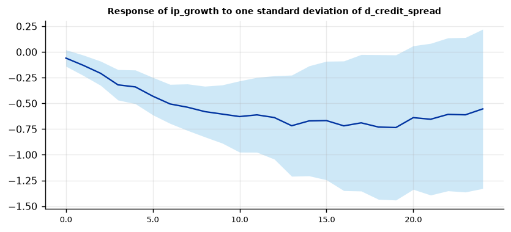
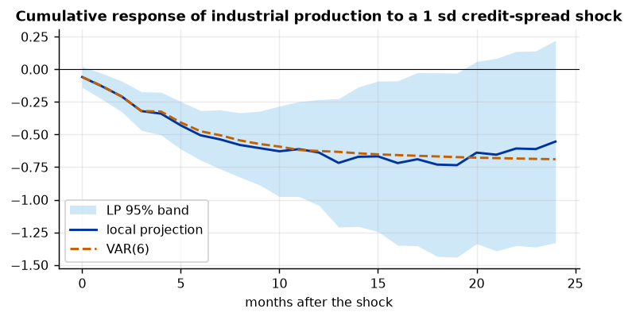

Run this model on your own data in Open Econometric Systems →
Step 1The question and the model
What is the path of \(y\) after a shock \(s\)? A local projection estimates the impulse response at each horizon \(h = 0, 1, \dots, H\) with a separate regression:
where \(x_t\) holds the controls dated \(t\) or earlier (lags of \(y\), of the shock and of other variables, and any variables ordered before the shock). The coefficient \(\beta_h\) is the response of \(y_{t+h}\) to the shock, and the sequence \(\beta_0, \dots, \beta_H\) is the impulse response function. A VAR gets the same object by iterating one estimated system forward; a local projection estimates each horizon directly. That makes it less efficient but more robust: a misspecified lag length or a nonlinear dynamic does not propagate from short to long horizons.
Three checks before you trust a local projection
- Is the shock identified? The coefficient is a causal response only if \(s_t\) is unrelated to the other things that move \(y\). Either the shock is exogenous by construction (a narrative or high-frequency measure, an instrument), or you control for what the shock responds to within the period (the recursive, or Cholesky, assumption).
- Is the transformation right? Local projections work in levels, in differences and in growth rates, but the outcome must match the question. A response of a level needs the level (or a cumulative sum of growth rates) on the left-hand side.
- Are the standard errors right? The horizon-\(h\) errors are a moving average of order \(h\), so ordinary standard errors are wrong. Use Newey-West errors (with bandwidth \(h+1\)) or lag augmentation with robust errors.
How to write it: the model
We estimate the dynamic effect of a credit-spread shock on industrial production with local projections (Jordà 2005). For each horizon \(h = 0, \dots, 24\) months we regress the cumulative growth of industrial production from \(t\) to \(t+h\) on the change in the credit spread at \(t\), on the contemporaneous stock return, and on six lags of every variable. Identification is recursive: the stock market reacts to news about credit conditions within the month, whereas industrial production and the policy rate respond with a lag. Standard errors are Newey-West with bandwidth \(h+1\), and the shock is scaled to one standard deviation.
Step 2Load the data and check the transformation
import numpy as np
import pandas as pd
import oes_engine as oes # pip install -e open-econometric-systems/oes-engine
from statsmodels.tsa.stattools import adfuller, kpss
data = open("returns.csv").read()
df = pd.read_csv("returns.csv")
print(df.describe().round(2).loc[["count", "mean", "std", "min", "max"]])
for c in ["sp500_return", "ip_growth", "d_fedfunds", "d_credit_spread"]:
print(f"{c:16s} ADF p = {adfuller(df[c], autolag='AIC')[1]:.3f} KPSS p = {kpss(df[c], nlags='auto')[1]:.3f}")sp500_return ip_growth d_fedfunds d_credit_spread count 420.00 420.00 420.00 420.00 mean 0.70 0.15 -0.02 0.00 std 3.54 0.61 0.19 0.17 min -22.80 -4.48 -0.96 -0.99 max 11.35 2.04 0.87 1.45 sp500_return ADF p = 0.000 KPSS p = 0.100 ip_growth ADF p = 0.000 KPSS p = 0.100 d_fedfunds ADF p = 0.001 KPSS p = 0.100 d_credit_spread ADF p = 0.000 KPSS p = 0.100
How to read it
All four series are stationary: the ADF tests reject a unit root (p ≤ 0.001) and the KPSS tests do not reject stationarity (p = 0.10 is the top of the table of available p-values). Stock returns, industrial-production growth and the changes in the fed funds rate and the credit spread are already in the form a local projection needs, so no further transformation is required. The sample has 420 months (1985–2019), and the credit-spread change has a standard deviation of 0.17 percentage points, so a "one-standard-deviation shock" is a 17 basis-point widening. If your shock or outcome were a trending level, use a change or a growth rate; local projections in levels are also valid (see lag augmentation in Step 6), but the interpretation changes.
Step 3Identify the shock and choose the controls
The choice of controls is the identification. Compare the response with and without the stock return as a contemporaneous control.
spec = dict(y="ip_growth", shock="d_credit_spread", contemp=["sp500_return"], controls=["d_fedfunds"], outcome="cumsum",
scale="sd", time="date", lags=6, horizon=24)
no_ctrl = oes.run("lp", data, dict(spec, contemp=[], controls=["sp500_return", "d_fedfunds"]))
with_ctrl = oes.run("lp", data, spec)
col = lambda r: [row[1] for row in r["tables"][0]["rows"]]
cmp = pd.DataFrame({"stock return only in lags": col(no_ctrl), "stock return contemporaneous": col(with_ctrl)}, index=pd.Index(range(25), name="horizon"))
print(cmp.loc[[0, 1, 3, 6, 12, 18, 24]].round(3))stock return only in lags stock return contemporaneous horizon 0 -0.027 -0.060 1 -0.107 -0.130 3 -0.387 -0.320 6 -0.652 -0.506 12 -0.884 -0.638 18 -0.980 -0.731 24 -0.818 -0.554
How to read it
The controls change the answer. If the stock return enters only through its lags, a one-standard-deviation spread shock lowers industrial production by 0.88% after 12 months; if the contemporaneous stock return is held fixed, the fall is 0.64%. The two estimates differ because stock prices and credit spreads react to the same news within the month. Holding the stock return fixed treats that news as already priced in by the stock market and attributes only the part of the spread movement that is not contemporaneously reflected in stock returns to the credit shock. Neither choice is "correct" without an argument. State the ordering you assume and report the other as a robustness check (Step 6). The baseline in the rest of the guide holds the stock return fixed, which is the more conservative of the two.
Step 4Estimate the impulse response
r = oes.run("lp", data, spec)
oes.summary(r)
oes.show(r, "Impulse response")
oes.plot(r, "Response of ip_growth", ncols=1, size=(6.5, 3))Observations (h = 0): 414
Horizons: 24
Lags: 6
Shock std. dev.: 0.1688
Peak response: -0.7352
Peak horizon: 19
Standard errors: Newey-West
Estimator: OLS
Impulse response by horizon
Response Std. err. p-value 95% CI low 95% CI high Obs.
Horizon
0 -0.0596 0.0407 0.1437 -0.1394 0.0203 414
1 -0.1300 0.0506 0.0102 -0.2293 -0.0308 413
2 -0.2079 0.0601 0.0005 -0.3257 -0.0901 412
3 -0.3201 0.0756 0.0000 -0.4682 -0.1719 411
4 -0.3402 0.0837 0.0000 -0.5043 -0.1761 410
5 -0.4300 0.0930 0.0000 -0.6123 -0.2478 409
6 -0.5061 0.0970 0.0000 -0.6961 -0.3160 408
7 -0.5377 0.1154 0.0000 -0.7639 -0.3115 407
8 -0.5803 0.1258 0.0000 -0.8269 -0.3337 406
9 -0.6044 0.1445 0.0000 -0.8876 -0.3212 405
10 -0.6286 0.1769 0.0004 -0.9752 -0.2819 404
11 -0.6120 0.1857 0.0010 -0.9760 -0.2480 403
12 -0.6381 0.2068 0.0020 -1.0434 -0.2327 402
13 -0.7178 0.2510 0.0042 -1.2097 -0.2259 401
14 -0.6707 0.2729 0.0140 -1.2057 -0.1358 400
15 -0.6677 0.2944 0.0233 -1.2447 -0.0908 399
16 -0.7190 0.3218 0.0255 -1.3496 -0.0883 398
17 -0.6896 0.3387 0.0418 -1.3535 -0.0257 397
18 -0.7307 0.3590 0.0418 -1.4344 -0.0270 396
19 -0.7352 0.3603 0.0413 -1.4413 -0.0291 395
20 -0.6390 0.3564 0.0730 -1.3375 0.0595 394
21 -0.6548 0.3765 0.0820 -1.3927 0.0832 393
22 -0.6073 0.3797 0.1097 -1.3515 0.1368 392
23 -0.6115 0.3835 0.1109 -1.3632 0.1402 391
24 -0.5541 0.3954 0.1611 -1.3291 0.2209 390
Note: Response of ip_growth to one standard deviation of the shock. Outcome: ip_growth(t) + ... + ip_growth(t+h). Each row is a separate regression.
How to read it
A one-standard-deviation widening of the credit spread lowers the level of industrial production by 0.06% in the month of the shock (not significant, p = 0.14), by 0.32% after three months, and by 0.64% after twelve months (95% band −1.04 to −0.23). The response keeps deepening to a maximum of −0.74% at 19 months and is significant at 5% from month 1 to month 19. After 20 months the band includes zero. Each row is a separate regression with 390 to 414 observations; the bands widen with the horizon (standard error 0.04 at h = 0, 0.21 at h = 12 and 0.40 at h = 24), which is the main cost of the method. In the output, "Peak response" is the largest absolute response and "Peak horizon" is the horizon at which it occurs.
Step 5Compare with a VAR
A VAR with the same variables and the same ordering gives the same object by a different route. Agreement is reassuring; a large gap means that the VAR dynamics are misspecified or that the local projection is imprecise.
import matplotlib.pyplot as plt
from statsmodels.tsa.api import VAR
order = ["sp500_return", "d_credit_spread", "d_fedfunds", "ip_growth"]
res = VAR(df[order]).fit(6)
chol = np.linalg.cholesky(res.sigma_u.values)
var_irf = res.irf(24).orth_cum_effects[:, order.index("ip_growth"), order.index("d_credit_spread")] / chol[1, 1] * df["d_credit_spread"].std()
rows = r["tables"][0]["rows"]
h = [x[0] for x in rows]; b = np.array([x[1] for x in rows]); lo = np.array([x[4] for x in rows]); hi = np.array([x[5] for x in rows])
fig, ax = plt.subplots(figsize=(6.5, 3))
ax.fill_between(h, lo, hi, color="#9fd3f0", alpha=.5, lw=0, label="LP 95% band")
ax.plot(h, b, lw=1.6, label="local projection"); ax.plot(h, var_irf, "--", lw=1.6, label="VAR(6)")
ax.axhline(0, color="k", lw=.6); ax.set_xlabel("months after the shock"); ax.set_title("Cumulative response of industrial production to a 1 sd credit-spread shock"); ax.legend()
print(pd.DataFrame({"LP": b, "VAR": var_irf}, index=pd.Index(h, name="horizon")).loc[[0, 3, 6, 12, 18, 24]].round(3))LP VAR horizon 0 -0.060 -0.060 3 -0.320 -0.319 6 -0.506 -0.475 12 -0.638 -0.626 18 -0.731 -0.668 24 -0.554 -0.689

How to read it
The VAR and the local projection agree closely for the first year: −0.32 against −0.32 at three months, −0.64 against −0.63 at twelve months. They separate at long horizons. At 18 months the figures are −0.73 and −0.67, and at 24 months the local projection shows a recovery (−0.55) while the VAR continues to deepen (−0.69). That is the usual pattern: a VAR imposes a smooth, geometrically decaying response because it extends the short-run dynamics to every horizon, whereas a local projection lets each horizon speak for itself. The difference at 24 months (0.13) is small relative to the local-projection standard error (0.40), so the two are not statistically distinguishable. Report the local projection as the main result and the VAR as a cross-check, or the other way round, but state which.
Step 6Robustness: lags, lag augmentation, standard errors and the shock size
variants = {"baseline (6 lags, Newey-West)": {},
"3 lags": dict(lags=3), "12 lags": dict(lags=12),
"lag-augmented, robust errors": dict(lag_augment="yes"),
"Newey-West bandwidth 24": dict(bandwidth=24),
"stock return not a control": dict(contemp=[], controls=["sp500_return", "d_fedfunds"])}
out = {}
for name, v in variants.items():
rows = oes.run("lp", data, dict(spec, **v))["tables"][0]["rows"]
pk = min(rows, key=lambda x: x[1])
out[name] = [rows[12][1], rows[12][2], pk[1], pk[0]]
print(pd.DataFrame(out, index=["response h=12", "std. err. h=12", "largest fall", "at horizon"]).T.round(3))response h=12 std. err. h=12 largest fall at horizon baseline (6 lags, Newey-West) -0.638 0.207 -0.735 19.0 3 lags -0.541 0.205 -0.622 19.0 12 lags -0.781 0.252 -0.946 19.0 lag-augmented, robust errors -0.624 0.282 -0.728 19.0 Newey-West bandwidth 24 -0.638 0.194 -0.735 19.0 stock return not a control -0.884 0.211 -0.980 18.0
How to read it
The sign and the timing are robust, the size is not. With three lags the response at twelve months is −0.54, with six lags −0.64 and with twelve lags −0.78; the lag-augmented specification with heteroskedasticity-robust errors gives −0.62 with a larger standard error (0.28 against 0.21). Widening the Newey-West bandwidth to 24 leaves the estimate unchanged and lowers the standard error slightly (0.19), so the significance does not depend on the bandwidth rule. The largest fall is at 19 months in every specification that holds the stock return fixed (18 months without it). The identification choice matters most: leaving the stock return out of the contemporaneous controls gives −0.88 at twelve months. In the paper, say that the response at one year is between 0.5% and 0.9% depending on lags and identification, and that all specifications agree on the shape.
Step 7A level or a growth rate? The outcome option
Industrial-production growth is a monthly growth rate. With the level outcome the response at horizon \(h\) is the effect on growth in month \(t+h\); with the cumulative-sum outcome it is the effect on the level of production, which is usually the question.
r_g = oes.run("lp", data, dict(spec, outcome="level"))
r_c = oes.run("lp", data, spec)
f = lambda r: pd.DataFrame(r["tables"][0]["rows"], columns=r["tables"][0]["columns"]).set_index("Horizon")
print(pd.DataFrame({"growth in month t+h": f(r_g)["Response"], "level: cumulative growth to t+h": f(r_c)["Response"],
"std. err. (level)": f(r_c)["Std. err."]}).round(3).loc[[0, 1, 2, 3, 6, 12, 18, 24]])growth in month t+h level: cumulative growth to t+h std. err. (level) Horizon 0 -0.060 -0.060 0.041 1 -0.071 -0.130 0.051 2 -0.078 -0.208 0.060 3 -0.112 -0.320 0.076 6 -0.072 -0.506 0.097 12 -0.025 -0.638 0.207 18 -0.038 -0.731 0.359 24 0.057 -0.554 0.395
How to read it
The monthly growth effects are small (−0.06 to −0.11 percentage points per month for the first six months) and fade by the end of the first year (−0.03 at twelve months, +0.06 at 24). Read on their own, the late-horizon figures suggest that the shock has no lasting effect. The cumulative-sum outcome shows what they add up to: a level of industrial production that is 0.64% lower after twelve months and still 0.55% lower after 24. Choose the outcome to match the question, and say in the text whether the response is of a growth rate or of a level.
When the shock is not observed: LP-IV
If you have an external instrument for the shock (a high-frequency surprise, a narrative series), add it with the instrument option. The shock is then estimated by two-stage least squares at every horizon (LP-IV; Stock and Watson 2018), and the first-stage F statistic is reported. Check that the F statistic is well above 10 before you read the response.
r_iv = oes.run("lp", data, dict(spec, instrument="spread_instrument"))
oes.show(r_iv, "First stage")Step 8Write the results
How to write it: results
A one-standard-deviation (17 basis-point) widening of the credit spread lowers the level of industrial production by 0.32% after three months (standard error 0.08) and by 0.64% after twelve months (standard error 0.21). The response reaches its maximum of −0.74% after 19 months, and is statistically significant at the 5% level from month 1 to month 19. The local-projection response is close to that of a VAR(6) with the same ordering for the first year; at 24 months the local projection shows a partial recovery (−0.55) while the VAR does not (−0.69). The size of the response at twelve months ranges from −0.54 to −0.88 across lag lengths and identifying assumptions; its sign and timing are the same in all of them.
| Report | What | Where |
|---|---|---|
| Model | Shock, outcome, controls, lags, horizon, standard errors | Step 1 |
| Data | Transformation and unit-root checks | Step 2 |
| Identification | Contemporaneous controls and their effect on the response | Step 3 |
| Estimates | Impulse response table and figure with 95% bands | Step 4 |
| Cross-check | VAR with the same ordering | Step 5 |
| Robustness | Lags, lag augmentation, bandwidth, contemporaneous control | Step 6 |
| Outcome | Level versus cumulative response | Step 7 |
References. Jordà (2005), American Economic Review; Plagborg-Møller and Wolf (2021), Econometrica; Montiel Olea and Plagborg-Møller (2021), Econometrica; Stock and Watson (2018), Economic Journal; Ramey (2016), Handbook of Macroeconomics; Li, Plagborg-Møller and Wolf (2024), Journal of Econometrics.